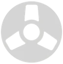
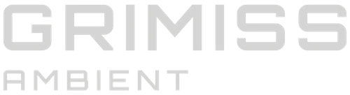

FOCUS
For study, ADHD focus
and late-night coding.


THE
Ambient music for Focus • Relax • Sleep, shaped by analogue tape.
Choose a tape and let it accompany your moment.
Scroll the shelf to explore the collection.
Selecting a tape stops the previous recording.
ON THE DECK
An eight-hour ambient soundscape. The video fades to black after one hour, leaving the music to accompany your rest.
WATCH ON YOUTUBE ↗The YouTube player loads only when you choose Play. Use its controls for playback, volume and full screen.
Entropy is selected. Ready when you are.
10 tapes at a time · Scroll the tape shelf for all 21 recordings
For study, ADHD focus
and late-night coding.
The same music can help
you unwind and reset.
Gently evolving music
for bedtime and rest.
Real analogue character
in a modern world.
Choose a sound you enjoy, start at a comfortable low volume and let it sit behind what you are doing. For coding or focused work, try a steady texture without lyrics. For bedtime, a longer recording means fewer interruptions.
The same tape can suit different moments. Change recordings whenever the sound no longer fits your mood. The player loads from YouTube when you press Play; playback and any adverts are handled by YouTube.